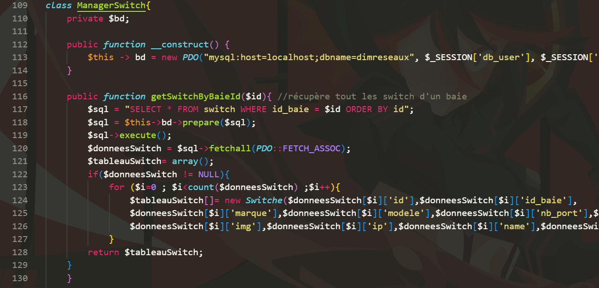
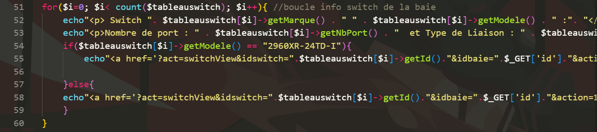
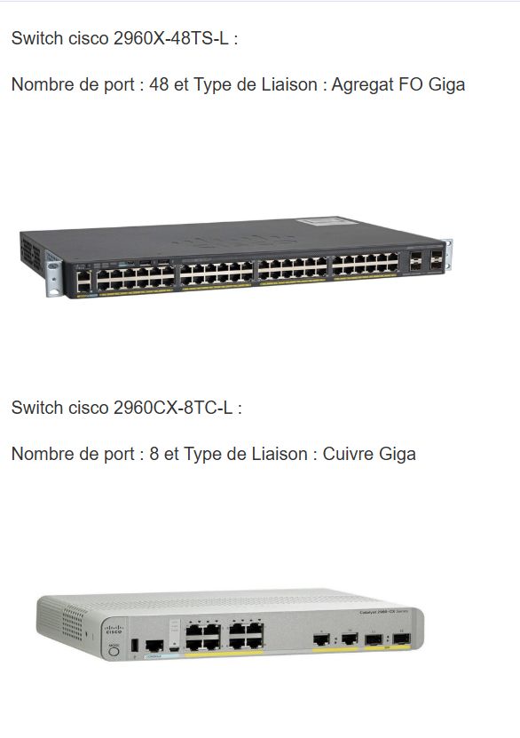

Ce projet, développé en PHP sur une période de 4 semaines, avait
pour objectif de centraliser les informations des baies et des
serveurs présents sur les différents sites de DIM, qu’il s’agisse
d’Autun ou de Rueil-Malmaison. Chaque jour, un script est exécuté
via le protocole SSH afin de récupérer toutes les données du réseau.
Grâce à SkynetDIM, vous pouvez partir d’Autun, accéder aux
bâtiments administratifs, sélectionner la baie qui vous intéresse,
puis le switch et enfin le port. Cela permet de visualiser chaque
couche, depuis la ville jusqu’au port.
Je vais illustrer avec la classe Switch, qui, comme toutes les autres
classes, inclut plusieurs méthodes, telles que modifSwitch,
afficherSwitch et supprimerSwitch.
SKYNETDIM

Cette méthode permet de récupérer tous les switches d’une baie,
pour pouvoir les afficher par la suite.

Je boucle sur le tableau renvoyé par ma méthode et j’affiche les
informations des switch de la baie, ce qui donne :
